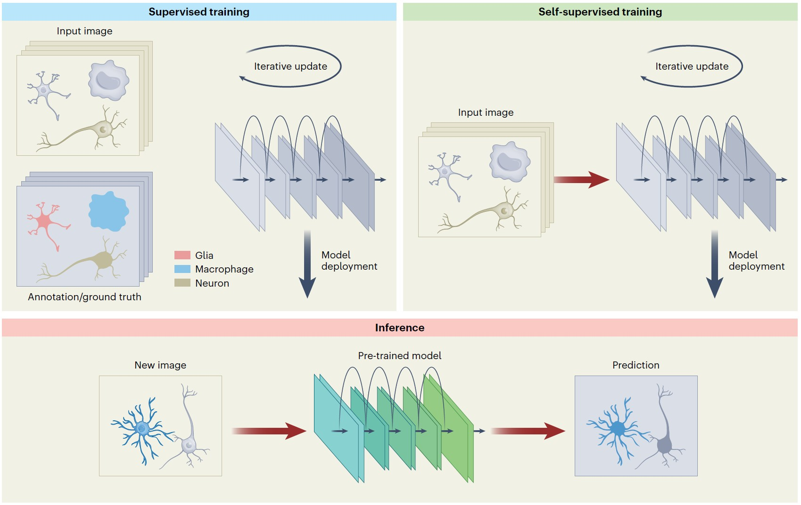

|
Xinyang LiPostdoctor, Assistant Research FellowDepartment of Automation, Tsinghua University Institute for Brain and Cognitive Sciences, Tsinghua University Email: xinyangli@tsinghua.edu.cn CV • Google Scholar • GitHub |
About Me
- I am a postdoctoral research assistant at the Department of Automation of Tsinghua University, working under Prof. Qionghai Dai, academician of Chinese Academy of Engineering.
- I received my Ph.D. degree at the Department of Automation of Tsinghua University in 2023, advised by Prof. Qionghai Dai and Prof. Haoqian Wang.
- I received my bachelor's degree at the School of Electronic and Information Engineering of Xi'an Jiaotong University in 2018.
- My research is on interdisciplinary research of artificial intelligence, optical imaging, and neuroscience, particularly intelligent image analysis and intelligent imaging.
- I will join the College of AI at Tsinghua University as an Assistant Professor in 2025. I am recruiting self-motivated students interested in AI, optical imaging, quantum optics, and robotics.
Updates
- [2023/11/08] 1 paper is accepted by Nature Computational Science!
- [2023/09/29] 1 paper is accepted by Nature Methods!
- [2023/04/28] 1 invited comment is accepted by Nature Methods!
- [2023/04/10] 1 papers is accepted by Cell!
- [2023/03/07] 1 paper is accepted by Nature Methods!
- [2022/11/14] 1 papers is accepted by PhotoniX!
- [2022/07/29] 1 paper is accepted by Nature Biotechnology!
- [2021/06/28] 1 paper is accepted by Nature Methods!
Publications
| Xinyang Li, Yixin Li, Yiliang Zhou, Jiamin Wu, Zhifeng Zhao, Jiaqi Fan, Fei Deng, Zhaofa Wu, Guihua Xiao, Jing He, Yuanlong Zhang, Guoxun Zhang, et al. Real-time denoising enables high-sensitivity fluorescence time-lapse imaging beyond the shot-noise limit. Nature Biotechnology, 2023. [Link][PDF][Code] |
|
|  | Xinyang Li, Yuanlong Zhang, Jiamin Wu, and Qionghai Dai. Challenges and opportunities in bioimage analysis. Nature Methods, 2023. [Link][PDF] |
| Xinyang Li, Xiaowan Hu, Xingye Chen, Zhifeng Zhao, Jiaqi Fan, Jiamin Wu, Haoqian Wang, Qionghai Dai. Spatial redundancy transformer for self-supervised fluorescence image denoising. Nature Computational Science, 2023. [Link][PDF][Code] |
|
| Xinyang Li, Guoxun Zhang, Jiamin Wu, Yuanlong Zhang, Zhifeng Zhao, Xing Lin, Hui Qiao, Hao Xie, Haoqian Wang, Lu Fang, Qionghai Dai. Reinforcing neuron extraction and spike inference in calcium imaging using deep self-supervised denoising. Nature Methods, 2021. [Link][PDF][Code] |
|
| Xinyang Li, Guoxun Zhang, Hui Qiao, Feng Bao, Yue Deng, Jiamin Wu, Yangfan He, Jingping Yun, Xing Lin, Hao Xie, Haoqian Wang, Qionghai Dai. Real-time denoising enables high-sensitivity fluorescence time-lapse imaging beyond the shot-noise limit. Light: Science & Applications, 2021. [Link][PDF][Code] |
|
| Xinyang Li, Yuanlong Zhang, Kan Liu, Hao Xie, Haoqian Wang, Lingjie Kong, Qionghai Dai. Adaptive optimization for axial multi-foci generation in multiphoton microscopy. Optics Express, 2019. [Link][PDF][Code] |
|
| Zhifeng Zhao, Yiliang Zhou, Bo Liu, Jing He, Jiayin Zhao, Yeyi Cai, Jingtao Fan, Xinyang Li, Zilin Wang, Zhi Lu, Jiamin Wu, Hai Qi, Qionghai Dai. Two-photon synthetic aperture microscopy for minimally invasive fast 3D imaging of native subcellular behaviors in deep tissue. Cell, 2023. [Link][PDF][Code] |
|
| Guoxun Zhang, Xiaopeng Li, Yuanlong Zhang, Xiaofei Han, Xinyang Li, Jinqiang Yu, Boqi Liu, Jiamin Wu, Li Yu, Qionghai Dai. Bio-friendly long-term subcellular dynamic recording by self-supervised image enhancement microscopy. Nature Methods, 2023. [Link][PDF][Code] |
|
| Yuanlong Zhang, Guoxun Zhang, Xiaofei Han, Jiamin Wu, Ziwei Li, Xinyang Li, Guihua Xiao, Hao Xie, Lu Fang, Qionghai Dai. Rapid detection of neurons in widefield calcium imaging datasets after training with synthetic data. Nature Methods, 2023. [Link][PDF][Code] |
|
| Yi Zhang, Yuling Wang, Mingrui Wang, Yuduo Guo, Xinyang Li, Yifan Chen, Zhi Lu, Jiamin Wu, Xiangyang Ji, Qionghai Dai. Multi-focus light-field microscopy for high-speed large-volume imaging. PhotoniX, 2023. [Link][PDF] |
|
| Ruheng Shi, Cheng Jin, Hao Xie, Yuanlong Zhang, Xinyang Li, Qionghai Dai, Lingjie Kong. Multi-plane, wide-field fluorescent microscopy for biodynamic imaging in vivo. Biomedical Optics Express, 2022. [Link][PDF] |
|
| Soheil Soltani, Ashkan Ojaghi, Hui Qiao, Nischita Kaza, Xinyang Li, Qionghai Dai, Adeboye O. Osunkoya, Francisco E. Robles. Prostate cancer histopathology using label-free multispectral deep-uv microscopy quantifies phenotypes of tumor aggressiveness and enables multiple diagnostic virtual stains. Scientific Reports, 2022. [Link][PDF] |
|
| Xinyang Li, Zhifeng Zhao, Guoxun Zhang, Hui Qiao, Haoqian Wang, Qinghai Dai. High-fidelity fluorescence image restoration using deep unsupervised learning. OSA Biophotonics Congress: Biomedical Optics, 2020. [Link][PDF] |
|
| Chaowei Zhuang, Xinyang Li, Yuanlong Zhang, Lingjie Kong, Hao Xie, Qionghai Dai. Photobleaching Imprinting Enhanced Background Rejection in Line-Scanning Temporal Focusing Microscopy. Frontiers in Chemistry, 2020. [Link][PDF] |
|
| Yuanlong Zhang*, Xinyang Li*, Hao Xie, Lingjie Kong, Qionghai Dai. Hybrid spatio-spectral coherent adaptive compensation for line-scanning temporal focusing microscopy. Journal of Physics D: Applied Physics, 2019. [Link][PDF] |
|
| Yuanlong Zhang, Tiankuang Zhou, Xuemei Hu, Xinyang Li, Hao Xie, Lu Fang, Lingjie Kong, Qionghai Dai. Overcoming tissue scattering in wide-field two-photon imaging by extended detection and computational reconstruction. Optics Express, 2019. [Link][PDF][Code] |
Lectures
- Xinyang Li, “High-sensitivity imaging and computing beyond the standard quantum limit: from AI to quantum”, College of AI at Tsinghua University, Public research talk, December 2024..
- Xinyang Li, “Deep self-supervised denoising enables ultrasensitive fluorescence imaging beyond the shot-noise limit”, The 3rd CAAl International Conference on Artificial Intelligence, invited talk on intelligent microscopy, July 2023.
- Xinyang Li, “Real-time denoising of fluorescence imaging using DeepCAD-RT”, Tsinghua Laboratory of Brain and Intelligence, Lab Seminar, April 2023.
- Xinyang Li, “Deep self-supervised denoising enables ultrasensitive fluorescence imaging beyond the shot-noise limit”, Tsinghua IDG/McGovern Institute for Brain Research, Seminar on Neuroscience Frontiers, September 2022.
- Xinyang Li, “Reinforcing neuron extraction and spike inference in calcium imaging using deep self-supervised denoising”, Peking University, Lab Seminar, March 2022.
- Xinyang Li and Guoxun Zhang, “High-fidelity fluorescence image restoration using deep unsupervised learning”, OSA Biophotonics Congress, Oral Presentation, April 2020.
Professional Activities
- Invited Speaker, The 3rd CAAl International Conference on Artificial Intelligence.
- Reviewer, IEEE Transactions on Circuits and Systems for Video Technology.
- Reviewer, Scientific Reports
- Reviewer, Biomedical Optics Express.
- Funding, China Postdoctoral Science Foundation.
- Invited Visitor, The University of Hong Kong, China, May 2023.
- Invited Visitor, Heidelberg University, October 2023.
- Invited Visitor, Carl Zeiss AG and University of Jena, October 2023.
Awards and Honors:
- Shuimu Scholar Award, Tsinghua University, 2023.
- Outstanding Ph.D. Graduate of Beijing, 2023.
- Outstanding Ph.D. Graduate of Tsinghua University, 2023.
- Outstanding Doctoral Dissertation of Tsinghua University, 2023.
- Award for Excellent Academic Lecture, THU-IDG/McGovern Institute for Brain Research, 2023.
- National Scholarship, Tsinghua University, 2022.
- THU-IDG/McGovern Award for Outstanding Research Achievement, 2022.
- National Scholarship, Tsinghua University, 2021.
- First Prize for Outstanding Laboratory Contribution, Tsinghua University, 2021.
- Outstanding Graduate Student Leaders, Xi'an Jiaotong University, 2018.
- National Scholarship, Xi'an Jiaotong University, 2017.
- National Scholarship, Xi'an Jiaotong University, 2016.
- Outstanding Student Leaders, Xi'an Jiaotong University, 2016.
- National Scholarship, Xi'an Jiaotong University, 2015.